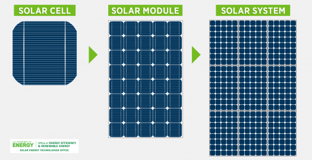
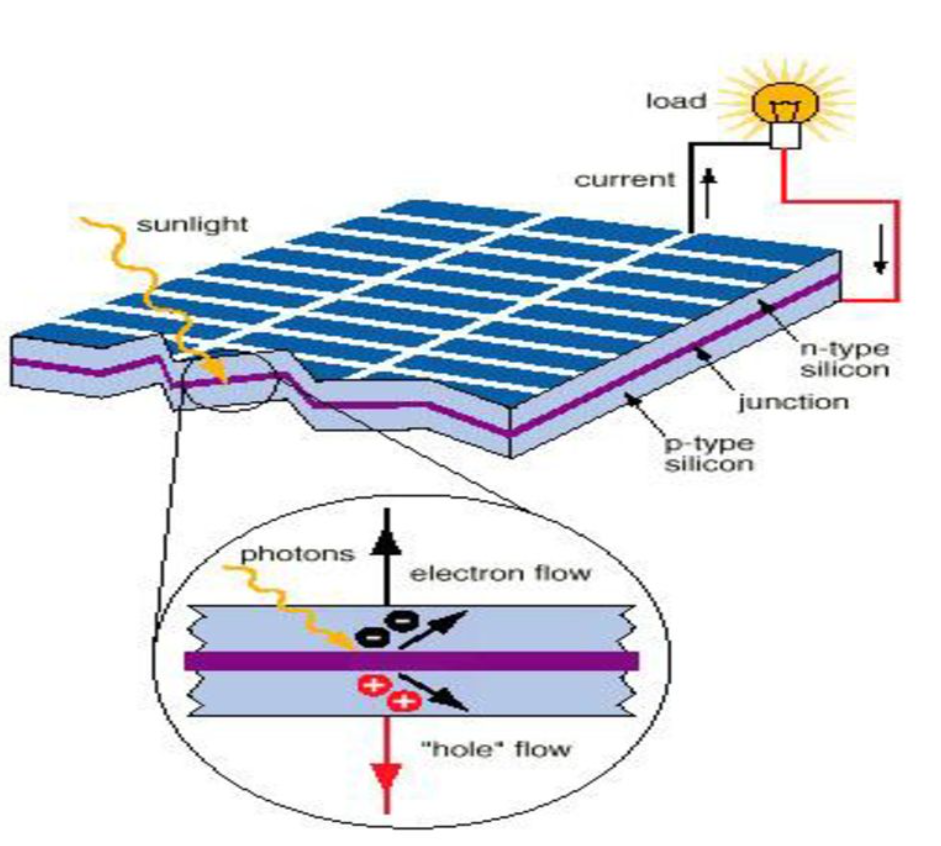

الخلية الشمسية
تحوّل الطاقة الضوئية إلى طاقة كهربائية. ويُصنع اللوح الشمسي من مجموعة خلايا متصلة معًا.
نستقصي أثر زاوية سقوط الضوء وتغطية جزء من الخلية الشمسية في خرجها وسرعة دوران المحرك، ثم نوسّع المقارنة في المحاكاة بتغيير شدة الضوء.
الفكرة العلمية
تحوّل الطاقة الضوئية إلى طاقة كهربائية. ويُصنع اللوح الشمسي من مجموعة خلايا متصلة معًا.
طاقة ضوئية في الخلية، ثم طاقة كهربائية في الدارة، ثم طاقة حركية في المحرك.
يزداد خرج الخلية عندما يكون الضوء قويًا، وتسقط الأشعة مباشرة على سطحها، ولا يحجبها غطاء أو ظل.
غيّر عاملًا واحدًا في كل مرة، وثبّت بقية العوامل، ثم قارن النتائج.
التجربة العملية
تنبيه: لا تنظر مباشرة إلى الشمس، ونفّذ التجربة والقياسات بإشراف المعلم. يُقاس فرق الجهد على التوازي، ويُقاس التيار على التوالي بعد اختيار المدخل والمدى الصحيحين في جهاز DMM؛ فلا توصل الجهاز المضبوط على قياس التيار مباشرة بطرفي الخلية.
دوّن قراءاتك الحقيقية في كل حالة. اترك شدة الضوء والمسافة ثابتتين عند اختبار الميل أو التغطية.
| الحالة | سرعة دوران المحرك | فرق الجهد V | شدة التيار I |
|---|---|---|---|
| الأشعة عمودية على الخلايا | |||
| الأشعة مائلة عن الخلايا | |||
| الخلايا غير مغطاة | |||
| جزء من الخلايا مغطى | |||
| الخلايا مغطاة بالكامل |
جرّب بنفسك
غيّر القيم، ثم اضغط تشغيل التجربة. شدة الضوء متغير إضافي في المحاكاة، وتمثّل النتائج خرجًا كهربائيًا نسبيًا تقريبيًا للتعلّم، وليست قياسات مخبرية بوحدة الأمبير.
تجارب جاهزة
سجّل وقارن
| المحاولة | شدة الضوء | الميل | التغطية | الخرج النسبي | سرعة المحرك |
|---|---|---|---|---|---|
| لم تُسجَّل نتائج بعد. | |||||
أفكّر ثم أتحقّق
فكّر في الإجابة أولًا، ثم اضغط «إظهار الإجابة» وقارنها بإجابتك. عبّر بكلماتك مع الحفاظ على المعنى العلمي.
النتيجة المتوقعة وتفسيرها
عند ضوء قوي، وأشعة عمودية على سطح الخلية، ومن دون تغطية. في هذه الحالة يستقبل سطح الخلية ضوءًا أكثر، فيزداد الخرج الكهربائي المتاح للمحرك في النموذج.
النتيجة المتوقعة وتفسيرها
يقل الضوء الذي يستقبله السطح، فينخفض الخرج الكهربائي وسرعة المحرك في المحاكاة. وفي التجربة العملية يُتوقع انخفاض التيار عادةً مع ثبات بقية الظروف. الميل هنا يُقاس ابتداءً من وضع الأشعة العمودية على السطح.
إجابة مقترحة مع التفسير
لأن الغطاء يحجب جزءًا من الضوء فتقل القدرة الكهربائية المتاحة للمحرك عادةً. ولا يلزم أن تصبح السرعة نصف قيمتها؛ فالنتيجة تتأثر بالخلية والتوصيلات والمحرك والحمل.
مثال لإجابة ممكنة
يمكن اختيار موضع يقل فيه ظل المباني والأشجار، أو تعديل اتجاه اللوح نحو الضوء. أختبر تعديلًا واحدًا مع تثبيت بقية الظروف قدر الإمكان، وأقارن الخرج قبل التعديل وبعده. تُقبل أفكار أخرى تربط التحسين بوصول الضوء.
لخّص عمل مجموعتك وفق عناصر التقرير المطلوبة في الكتاب.
صور توضيحية


المواد المساندة
شرائح حول الخلايا الشمسية وآلية عملها واستخداماتها.
اطبع صفحة النشاط بعد تسجيل نتائجك للاحتفاظ بالملاحظات.
بُنيت خطوات التجربة وجدول القياس وعناصر التقرير على نشاط ٣:١:١ في الصفحتين ٤–٥ من كتاب التكنولوجيا، وتدعم الشرائح قسم الفكرة العلمية والصور. أما المحاكاة فهي نموذج تعليمي مبسّط للمقارنة وليست أداة قياس مخبرية.